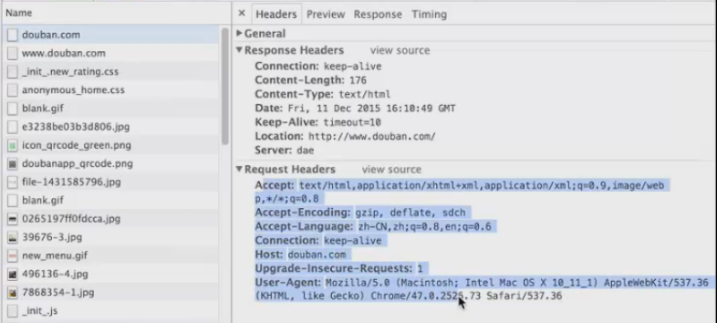
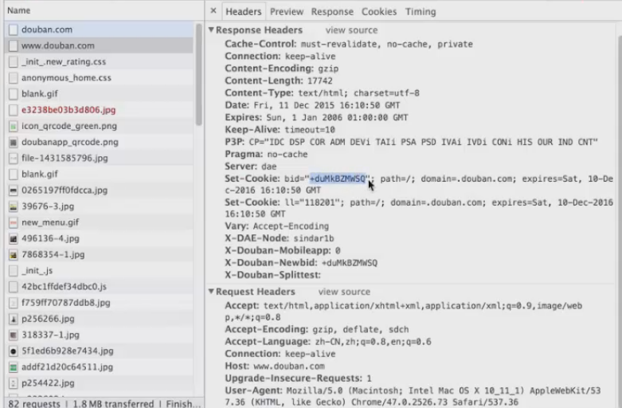
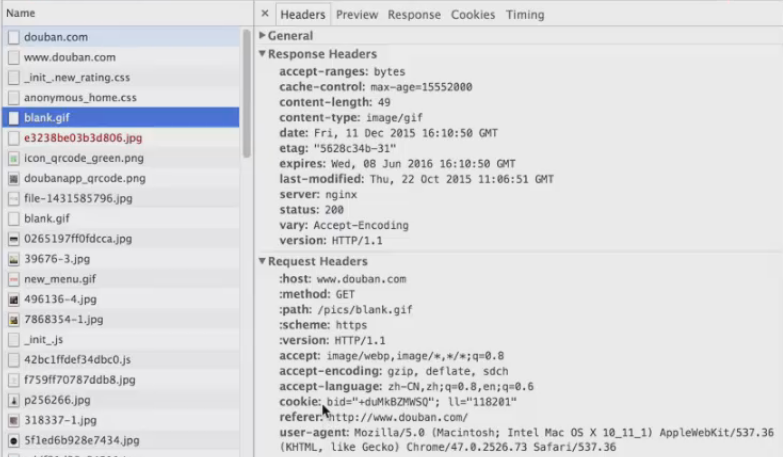
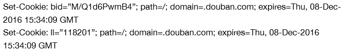
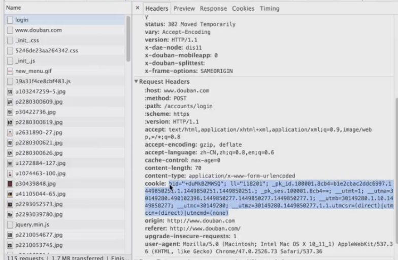
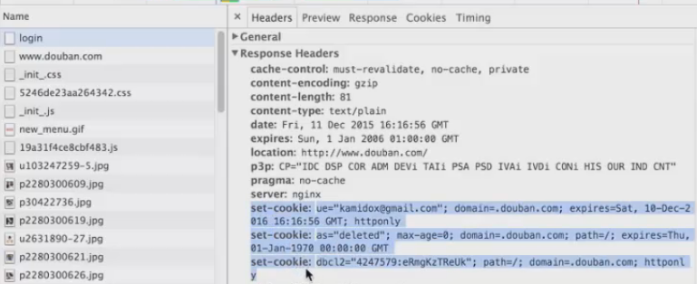
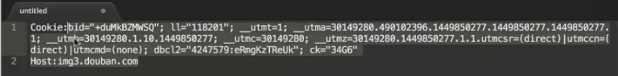
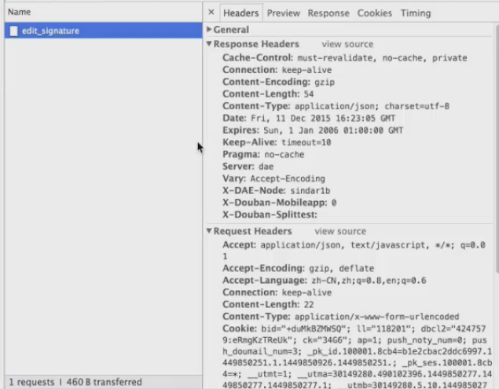
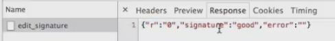

cookie数据长什么样：
清除浏览器历史数据
登录www.douban.com（http://www.douban.com）查看cookies数据
查看第一个请求，这里是比较干净的，它没有cookie，应答也没有cookie，应答码是301，实际请求是location这个地方，所以我们的浏览器发送了第二个请求。

第二个请求里面也没有cookie，但是它的应答包含了Set-cookie，这比较像我们的浏览器保存了两条数据，每一条cookie数据里面都必须有Set-cookie这个头设置，后面跟了path和domain，它表示这个cookie的作用域，就是这个cookie对哪个网站有效，因为一个网站只能设置自己的cookie，不能设置别的网站的cookie，如果设置别的网站的cookie，那这个就会存在一些安全上的问题，这里的expires表示这个超时时间。

第三个请求，这个请求就会把刚才哪个应答里面设置的cookie发回给服务器，实际上这里面的字符串的值和前面的是一样的。

1）客户端发送cookie时：
Cookie：key1=value1；key2=value2；key3=value3
2）服务器端保存cookie时：
Set-cookie：key1=value1；path=/；domain=xx
1）domain和path：定义cookie的作用域，当指定domain时，这个domain及其子域名都会包含这个cookie。
2）Expires：定义cookie的生命周期
3）HttpOnly：禁用脚本访问（这是个安全性的考虑就是这个cookie只能通过浏览器去访问，而不能通过脚本去访问，因为如果通过脚本去访问这个cookie的话，会引来一些脚本的问题）
1.登录信息：判断用户是否已经登录
登录时，我们经常会有保存密码这个选项，但是你如果选择了保存密码这个选项，实际上是浏览器会把这些cookies写到文件系统里面，那下次凭着这个cookie就可以自动登录上去了。
2.购物车：保存用户购买的商品列表
我们经常上一些购物网站的时候，即使我们没有登录，我们也可以把商品加到购物车里面，那这个购物车是保存在哪里的呢？实际上就是保存在cookie里面，就是服务器把这个购物的信息，商品的信息通过cookie的形式保存在客户端然后再把这个cookie发过去，那服务器就会知道你的客户端到底保存了什么信息
1）服务器在客户端存储的信息。
这些信息客户端上实际是不知道的，这些信息是由服务器来生成并且由服务器来解释。
2）请求时，客户端需要把未超时的cookies发回给客户端。
Cookie：bid=”kmlFWje+MYs”;||=”118201”
应答时，服务器会把新的cookies，以便下次请求时带上这些cookies。

以douban为例来模拟用户修改签名的操作。
我们来看一下这个登录的cookie，这个cookie就是上次登录的时候，服务器保存的东西，如果我们把这个浏览器的历史记录全部都清除掉的话，再重启浏览器，那这个cookie就会变成空的了。

针对这个登录的应答，服务器又设置了三条cookie，有了这三条cookie，就表示我们的cookie已经成功了，至于这三条cookie里面哪条是表示这个登录成功的信息，或者登录cookie的信息是用什么来表示的，什么样的数据格式，这个实际上我们是不清楚的，因为这个全部是由服务器来生成并且解析的。

我们把这个cookie拷贝出来，这个cookie能干什么呢？实际上这个cookie就包含了非常重要的安全信息，也就是说，我只要把这个cookie原封不动的发送给服务器，那么服务器就认为我已经登录了，虽然我不知道这个cookie里面哪个是登录的，但是我只要把这个东西发送给服务器，服务器就认为我已经登录了。对于一个登录用户而言，我能做的东西就很多了，比如，在我的豆瓣里面，我可以去修改我的签名。

我们可以看到，我们的签名里面包含了一串很长的cookie，这串cookie虽然我们不知道它是什么意思但是我只要把这个东西发送给服务器，服务器就认为我是一个授权者，合法的用户。

我们可以看到我们修改的签名的数据

作业：
通过搜索引擎学习一下cookie可能会引起什么样的安全问题。
【本文由麦子学院独家原创，转载请注明出处并保留原文链接】